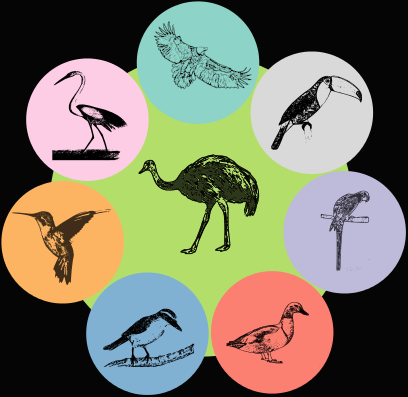
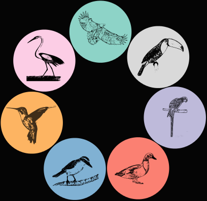
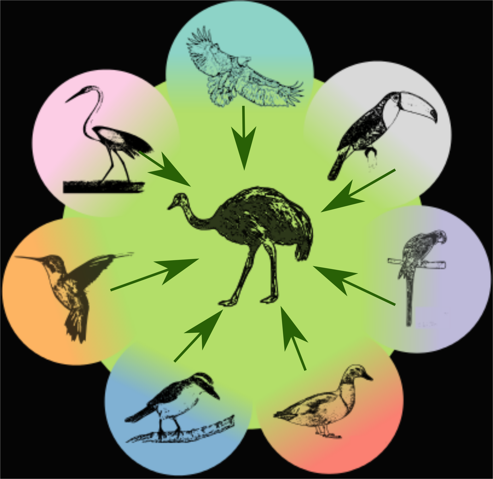
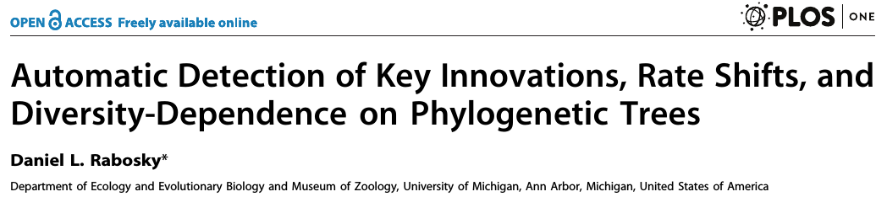

Os papéis da dieta, especiação e extinção na diversificação de aves e na montagem de redes de frugivoria
Gustavo Burin FERREIRA
Orientador: Tiago Bosisio QUENTAL
Co-orientador: Paulo R. GUIMARÃES Jr
20 de Março de 2018
Estrutura
- Capítulo 1: Dieta + Diversificação
- Capítulo 2: Performance de Métodos
- Capítulo 3: Diversificação + Redes
- Trajetória pessoal
Macroevolução
Por que aves?


Objetivos
- Entender os efeitos de diferentes dietas na diversificação do grupo
- Testar a performance de métodos amplamente utilizados
- Analisar a relação entre a diversificação e o papel ecológico
Capítulo 1
1150 espécies de onívoros
Recursos abundantes/previsíveis

Recursos abundantes/previsíveis

Recursos escassos/imprevisíveis
Recursos escassos/imprevisíveis

Capítulo 2
How well can we estimate diversity dynamics for clades in diversity decline?
Gustavo BURIN; Laura ALENCAR; Jonathan CHANG; Michael ALFARO; Tiago QUENTAL
Em revisão (aceito com major) na Systematic Biology


Mensagens
- Primeiro teste mais abrangente (espaço de parâmetros e time-travel)
- Ambos os modelos estimam as taxas bem no presente
- Atribui variação na diversificação à especiação (força queda)
Implicações práticas
- Dificuldade em detectar variação na extinção
- Estimativas ruins na raiz: reconstrução da história é falha
- Discordam nas empíricas
- Queda na especiação não parece ser tão comum
Capítulo 3
The role of diversification rates on the assembly of frugivory networks
Gustavo BURIN; Paulo GUIMARÃES; Tiago QUENTAL
Espécies mais centrais pertencem a linhagens mais estáveis/confiáveis
Closeness ~ Epsilon * Prec.An./Saz.Prec.
Espécies de linhagens menos estáveis não são centrais em regiões temperadas
Interação positiva com precipitação total e negativa com sazonalidade de precipitação
Resultados
- Relação negativa: espécies menos estáveis/“confiáveis” não são centrais em redes temperadas (species sorting)
- Relação modulada por disponibilidade hídrica (total e sazonal)
Mensagens finais
- Cap1: Onívoros parecem ser um ralo macroevolutivo
- Cap2: Métodos filogenéticos estimam bem no presente + reconstrução errada
- Cap3: Espécies de linhagens menos estáveis não são centrais em regiões temperadas
Minha trajetória
- Consultoria
- Cosméticos: estratégia internacional
- Análise de redes de co-autoria
- Limitado/pragmático
De volta à academia

1º capítulo aceito

1º capítulo publicado

Contato da FAPESP

Últimos 4 meses = 3º capítulo (um pouco mais de biologia)
Mensagens das minhas experiências
- Não tenha medo de mudar. O novo assusta, mas também empolga.
- Os problemas vão surgir (ansiedade, depressão, estresse), estejam preparados para lidar com eles.
- Não deixe as adversidades te paralisarem, e não tenha medo de tentar coisas diferentes do recomendado.
- Sua saúde (física e mental) e sua vida fora da academia importam tanto quanto seu esforço no laboratório.